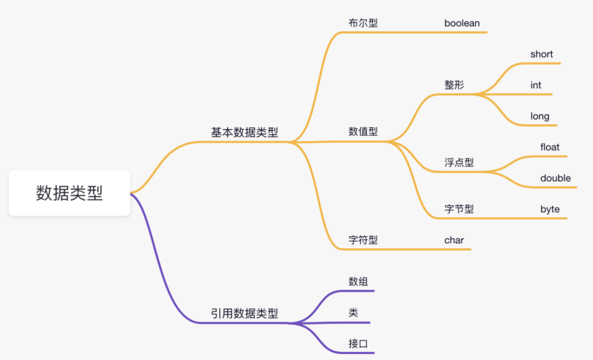
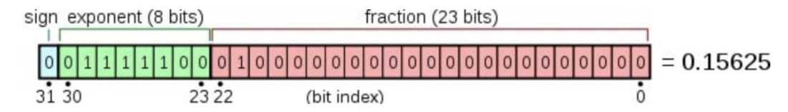
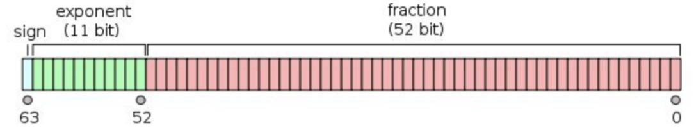
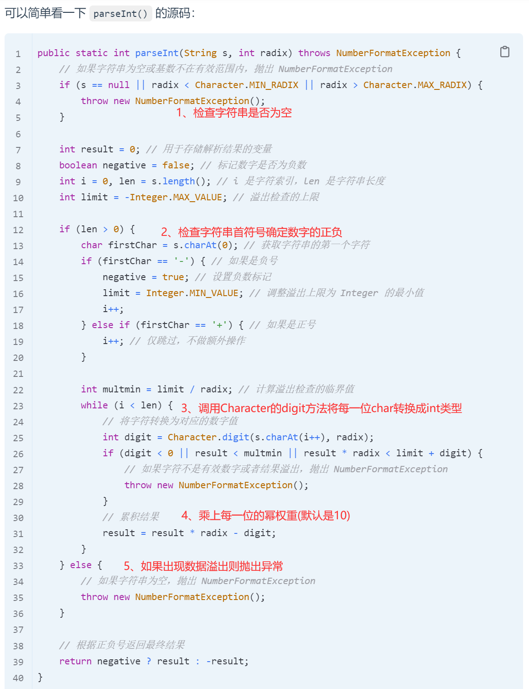
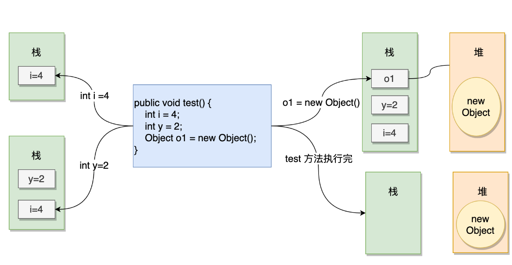
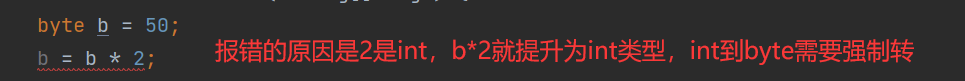
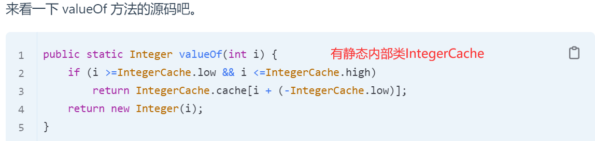

Java01_语法基础
数据类型

基本数据类型
变量可以分为局部变量、成员变量、静态变量：局部变量必须先初始化，成员或静态变量有默认值可以不进行初始化。
1 | public class LocalVar { |
基本数据类型有自己的默认值，而
Integer，Double对象的默认值是null。
单精度与双精度
单精度（single-precision）和双精度（double-precision）是指两种不同精度的浮点数表示方法。单精度浮点数通常占用 32 位（4 字节）存储空间，精度大约为 6 到 9 位有效数字。

双精度浮点数通常占用 64 位（8 字节）存储空间，精度大约为 15 到 17 位有效数字。

int和char的转换
- int 转换成 char
1 | /* 强制类型转换：将int整数(ASCII码)转换为对应的字符 */ |
- char 转换成 int
1 | /* 自动类型转换 */ |
包装器类型是 Java 中的一种特殊类型，用于将基本数据类型（如 int、float、char 等）转换为对应的对象类型。
Character.isDigit()检查字符是否为整数：
1 | boolean a = Character.isDigit('1'); |
Integer.parseInt()将字符串转换为整数：
1 | Integer b = Integer.parseInt("123"); |

自动装箱（Autoboxing）和自动拆箱（Unboxing）机制允许我们在基本数据类型和包装器类型之间自动转换，无需显式地调用构造方法或转换方法：

2
int primitiveValue = integerValue; // 自动拆箱，等同于 integerValue.intValue()
引用数据类型
引用数据类型的名和值并不是存储在一起的，而是存储了一个地址值，通过地址值引用到内存中实际存在的数据上。
基本数据类型在作为成员变量和静态变量的时候有默认值，引用数据类型（数组、类、接口）也有默认值是null（String是最经典的引用数据类型，String字符串是String类）。
基本数据类型：
变量名指向具体的数值。
基本数据类型存储在栈上。
引用数据类型：
变量名指向的是存储对象的内存地址，在栈上。
内存地址指向的对象存储在堆上。
栈和堆
堆是在程序运行时在内存中申请的空间（可理解为动态的过程，切记不是在编译时），因此 Java 中的对象就放在这里。当需要一个对象时，只需要通过 new 关键字写一行代码即可，当执行这行代码时，会自动在内存的“堆”区分配空间。
栈能够和处理器（CPU，也就是脑子）直接关联，因此访问速度更快。既然访问速度快，要好好利用啊！Java 就把对象的引用放在栈里（每一个方法都有一个自己全新的栈空间），因为 Java 在编译程序时，必须明确的知道存储在栈里的东西的生命周期，否则就没法释放旧的内存来开辟新的内存空间存放引用：

关于堆和栈的区别：https://www.zhihu.com/question/19729973/answer/2238950166
数据类型转换
自动类型转换
自动类型转换只发生在兼容类型之间。例如，从较小的数据类型（如 int）到较大的数据类型（如 long 或 double）的转换是安全的，因为较大的数据类型可以容纳较小数据类型的所有可能值。
1 | 表达式中类型的自动提升： |

1 | byte b = 50; |
强制类型转换
将较大的数据类型转换为较小的数据类型。
1 | double -> float -> long -> int -> char -> short -> byte |
不难理解，这里就不说了。
1 | int a = 1500000000, b = 1500000000; |
基本数据类型缓存池
基本数据类型的包装类除了 Float 和 Double 之外，其他六个包装器类（Byte、Short、Integer、Long、Character、Boolean）都有常量缓存池。
- Byte：-128~127，也就是所有的 byte 值
- Short：-128~127
- Integer：-128~127
- Long：-128~127
- Character：\u0000 - \u007F
- Boolean：true 和 false
拿 Integer 来举例子，Integer 类内部中内置了 256 个 Integer 类型的缓存数据，当使用的数据范围在 -128~127 之间时，会直接返回常量池中数据的引用，而不是创建对象，超过这个范围时会创建新的对象。
1 | Integer x = new Integer(18); |

在静态内部类IntegerCache中的static静态代码块中，low 为 -128，也就是缓存池的最小值；high 默认为 127（*可以在 JVM 启动的时候，通过 -XX:AutoBoxCacheMax=NNN 来设置缓存池的大小，最大到 Integer.MAX_VALUE -129*），也就是缓存池的最大值，共计 256 个。
- Post title：Java01_语法基础
- Post author：KiCheng
- Create time：2024-06-05 23:38:09
- Post link：https://kicheng.github.io/2024/06/05/Java01-语法基础-1/
- Copyright Notice：All articles in this blog are licensed under BY-NC-SA unless stating additionally.